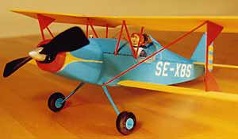
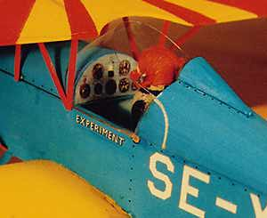

Model by Georg Tornkvist
Notes: To make this peanut look more like the original all-metal aircraft I decided to build it from thin sheets of hot wire cut blue foam. I think it looks better than stick & tissue, BUT it came out far, far too heavy at 15 grams. It wants to fly right, only needed minor adjustments: a little right thrust, a little right rudder and enough left aileron to counter the spiral, and it flies like on rails. The control surfaces are movable, of course, and the dihedral is scale. I aimed at 3 degr incidence for both wings, but it came out at 4 for the upper and 2 for the lower. I decided to use Pippi Longstocking as a pilot, because she is so daring. (I do not know if she is well known outside Sweden, but here she is much loved among us children.) And you told us to have fun. |

 |